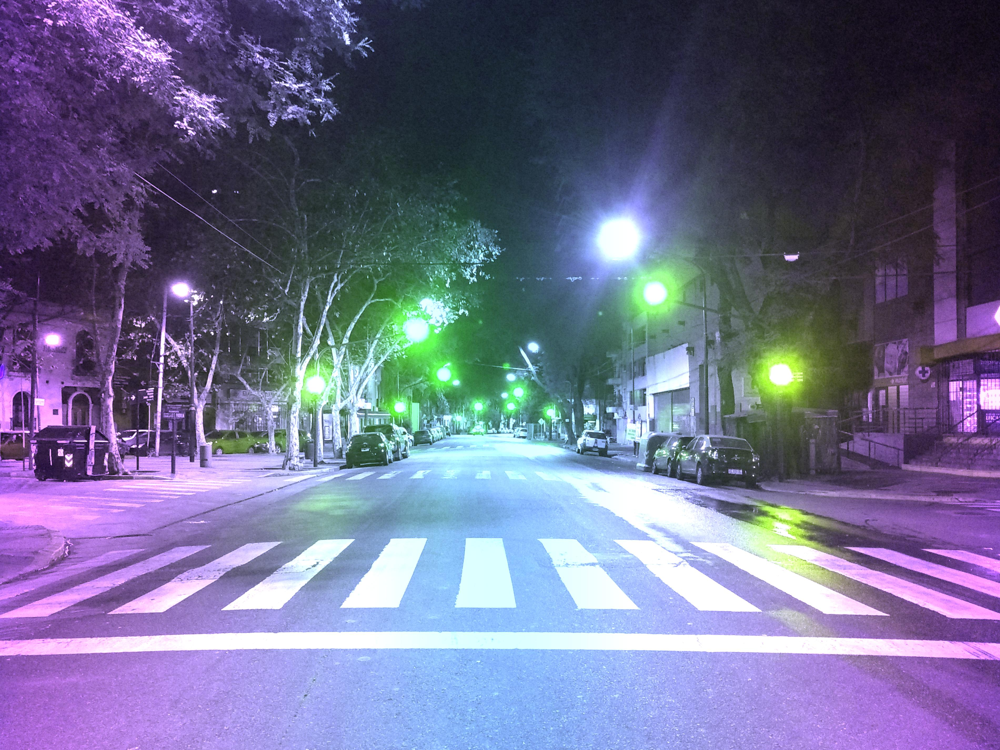

Doppler LightsLuces Doppler
This post comes from a well known joke: if you were to drive fast enough (20% of the speed of light), all red lights would appear green (so no tickets, I guess). This project computes what any photograph would look like to an observer moving at a relativistic speed $\beta = v/c$, accounting for both the Doppler shift in wavelength and the relativistic aberration of light.


Doppler shiftEfecto Doppler
When a source and observer move relative to each other, the observed frequency of light changes. In the non-relativistic limit this is the familiar Doppler effect. At relativistic speeds two corrections appear: the Lorentz factor $\gamma$ and the angle $\theta$ between the velocity vector and the line of sight. The observed wavelength is:
$$\lambda' = \frac{\lambda}{\gamma\,(1 - \beta\cos\theta)}$$
where $\gamma = 1/\sqrt{1-\beta^2}$ is the Lorentz factor and $\beta = v/c$. When the observer moves toward the source ($\cos\theta > 0$, $\beta < 0$ in the convention used here), the denominator exceeds 1 and wavelengths compress (blueshift). Moving away stretches them (redshift). The angle dependence means the effect is strongest along the direction of motion and vanishes at exactly $\theta = 90°$ (transverse direction).
AberrationAberración
Relativistic motion also warps the apparent direction of light. In the observer's frame, the angle $\theta'$ at which a ray arrives is related to the angle $\theta$ in the source frame by:
$$\cos\theta' = \frac{\cos\theta - \beta}{1 - \beta\cos\theta}$$
This follows directly from applying the Lorentz boost to the wave four-vector $k^\mu = (\omega/c)(1, \mathbf{n})$. The consequence is that all light appears to crowd toward the direction of motion: a source directly ahead stays at $\theta' = 0$, one directly behind stays at $\theta' = \pi$, and everything else shifts forward. At $\beta \to 1$, half of the sky's light concentrates into a narrow forward cone of opening angle $\theta \approx 1/\gamma$. In the images, aberration is modelled by mapping each pixel's angular position through this transformation before computing the wavelength shift.